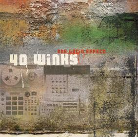

")
")
")
")
")
")
")
")
")
")
")
")
")
the Lucid Effect

- Sleep Rock 2:57
- Wise Up 3:30
- Wizardry 3:16
- Input A 4:43
- Rap about that (smoke and mirrors) 2:35
- Highwaves 3:21
- I heart u on drums (interlude) 1:11
- Winks Jazz 3:19
- One Way Ticket 3:24
- Hazy Notion 2:04
- Distorted Reception 2:44
- Keep On 3:32
- Sleep Ritual (Outro) 1:55
- Rap about that (smoke and mirrors) - Video by IWKN (Japan) *
* = CD only
Available in a store near you.
Also online at:
- hiphopvinyl.de - LP & CD (Germany)
- Access Hip Hop - LP & CD (US)
- juno records - LP (UK)
- Fastcut Records - LP (Japan)
- arch records - LP (Japan)
- pastel records - CD (Japan)
- wenod records - CD (Japan)
- Newton Records - LP (Japan)
- cisco records - LP (Japan)
- onsa records - LP / CD (Japan)
- jet set - LP (Japan)
- linus records - CD (Japan)
- ...
Reviews: Headphone Commute (english), Yes Yes Yall (english), De:Bug (german)